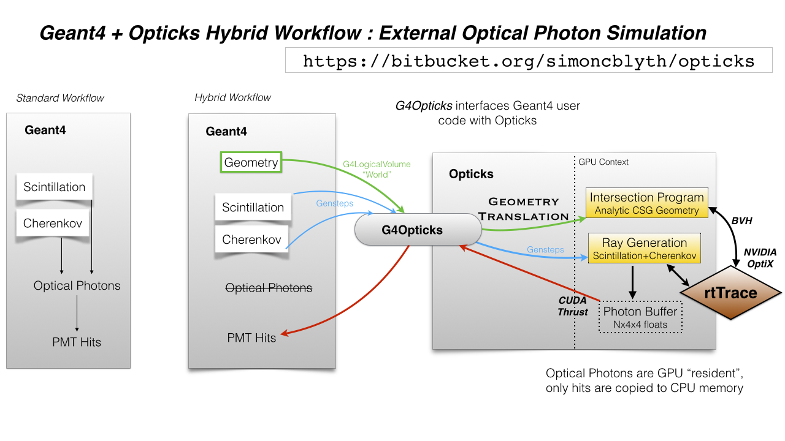

- replace Geant4 optical photon simulation with an equivalent GPU implementation based on NVIDIA OptiX
- provide automated geometry translation without approximation, Geant4 -> Opticks (GGeo) -> NVIDIA OptiX,
- provide a workflow that integrates the Opticks/OptiX simulation of optical photons with
the Geant4 simulation of all other particles
Page Overview
The focus of this description is on the Opticks usage of NVIDIA OptiX however necessary
summary contextual info for developers unfamiliar with Opticks is also collected here together
with references to more extensive documentation.
Links

G4Opticks : Geant4-Opticks interface class
Despite the classname G4Opticks is an Opticks class from g4ok sub-project
that provides a minimal interface to using embedded Opticks. It is
intended to be integrated with the Geant4 based simulation framework
of an experiment.
Scintillation and Cerenkov are the two physical processes which are the principal sources
of light relevant to neutrino and dark matter experiments.
After generation the photons propagate through the detector geometry
being scattered, absorbed, reemitted (in the bulk) and reflected, refracted, detected
or absorbed (on surfaces encountered).
The objective of simulation is to provide estimates of times and numbers of photons
that reach detectors such as Photomultipler tubes (PMTs) by creation of large samples with
various input particles types and parameters.
Simulation is the best way to understand complex detectors and as a result
form a better understanding of the physics of interest such as neutrinos coming
from nuclear reactors or from the sun or from earths mantle or from distant galaxies.
The green arrows in the above workflow diagram represent the translation of geometry information
that happens at initialization. As this translation can take minutes for large geometries
the Opticks(GGeo) geometry model is persisted to binary .npy files which can act as a geocache.
Geometry translation is steered by G4Opticks::translateGeometry with X4PhysicalVolume
taking the leading role.
The translation entails the serialization of Geant4 C++ geometry objects for materials, surfaces
and solid shapes into arrays and the upload of those into GPU buffers and textures.
Structural geometry volumes are translated into the NVIDIA OptiX geometry model using a very small
and flat heirarchy by effectively “factorizing” the structural geometry in a way that exploits
the large degree of repetition present in typical detector geometries such as JUNO,
with many thousands of photomultiplier tubes of various types. This “factorization” is
done with the GInstancer as detailed below.
Direct use of OptiX is primarily in the optixrap subproject OptiXRap Orientation : translates GGeo->OptiX
however most of the rest of Opticks is involved with the conversion of the
Geant4 geometry into a form that can become an OptiX geometry suitable for optical photon simulation.
Some familiarity with the Geant4 geometry model is required to understand Opticks
as the bulk of Opticks code is concerned with the automated translation of Geant4
geometries into Opticks(GGeo) geometries and subsequently OptiX geometries.
Opticks provides some simple bash functions to viewing Geant4 source, eg:
g4- # precursor bash function
g4-cls G4VSolid
- all Geant4 class names are prefixed with “G4”
- Opticks/ggeo class names mostly start with “G”
- Opticks/npy class names mostly start with “N”
- G4Opticks has an exceptional name, it is an Opticks/g4ok class
Geant4 Links
Gensteps (blue arrows in the above workflow diagram) are small arrays of shape (num_gensteps,6,4)
which act to carry the parameters of the Cerenkov and Scintillation photon generation from
their origin in the modified Geant4 process classes to the CUDA ports
of the process generation loops running within the NVIDIA OptiX ray generation program.
The parameters of each genstep includes the number of photons to generate and the
line segment along which to generate them together with other parameters
needed by the port of the G4Cerenkov and G4Scinillation generation loops.
Gensteps are typically several orders of magnitude smaller than the photons
that they yield. Photon generation on GPU has double benefits:
- no copying of lots of photons from CPU to GPU
- no CPU memory allocation for the majority of the photons, only the small
fraction of photons that are detected, known as hits, need to have CPU memory
allocation (see red arrows in the above workflow diagram)
Gensteps are the inputs to the optical simulation which yield hits as the output.
- G4Cerenkov (only generation loop)
- G4Scintillation (only generation loop)
- G4OpRayleigh (bulk scattering)
- G4OpAbsorption (bulk absorption)
- G4OpBoundaryProcess (only a few surface types)
To quickly view the sources of any Geant4 classes use the opticks bash function g4-cls:
Geometry classes can be split into three categories:
- material and surface properties
- solid shapes
- volume structure
The below sections list the classes from Geant4 and Opticks
that you need to be familiar with in order to understand how
Opticks translates the Geant4 geometry into an NVIDIA OptiX
geomety suitable for optical photon simulation.
- G4MaterialPropertiesTable
- holds properties such as RINDEX (refractive index), ABSLENGTH (absorption length), RAYLEIGH (scattering length)
as a function of energy
- G4Material
- name and properties table
- G4LogicalBorderSurface
- surface properties associated with the interface between two placed volumes (PV)
- G4LogicalSkinSurface
- surface properties associated with all placements of an unplaced logical volume (LV)
Material and surface properties from Geant4
are interpolated onto a common wavelength domain
and stored within instances of the below ggeo classes
- GMaterial GSurface
- GPropertyMap subclasses
- GMaterialLib GSurfaceLib
- vectors of GMaterial and GSurface with ability to serialize into NPY arrays
- GBndLib
- holds vector of int4 where the integers are indices pointing at surfaces and materials
inner-material/inner-surface/outer-surface/outer-material
This GGeo/GBndLib boundary lib is converted by oxrap/OBndLib into
the GPU boundary texture interleaving properties from the GMaterialLib and GSurfaceLib
into the boundary texture.
During initial traversal of the Geant4 volume tree a boundary index is assigned
to every volume corresponding to unique combinations of the
four indices (inner-material,inner-surface,outer-surface,outer-material).
This boundary index together with other identity information from GVolume::getIdentity
is available GPU side in the identity buffer.
The boundary index together with the boundary texture allows the current and next
material properties and the relevant surface properties to be obtained
via wavlength interpolated lookups on the boundary texture.
- G4VSolid
- abstract base class for solids such as G4Sphere, G4Cons (cone), …
Translated into NCSG containing trees of nnode (npy)
- npy/nnode
- constituent of CSG trees held in NCSG
- ggeo/GParts
- holder of NCSG nnode trees, with concatenation capability
- ggeo/GMesh
- despite the name this encompasses both triangulated mesh and analytic CSG geometry
of distinct solid shapes
- ggeo/GMergedMesh
- merged mesh containing merges of both triangulated and analytic geometry representations
from multiple GMesh.
- ggeo/GGeoLib
- holds the GMergedMesh and handles persisting
- G4LogicalVolume “LV”
- unplaced volume having a solid and material
- G4VPhysicalVolume “PV”
- placed volume positioning the G4LogicalVolume within a hierarchy
- ggeo/GVolume
- converted from Geant4 physical+logical volume, has GMesh and transform constituents
- ggeo/GMergedMesh
as GMergedMesh holds identity and transform arrays across the entire geometry it straddles both
shape and structure geometry categories
GMergedMesh are Translated into optix::Group OR optix::GeometryGroup underneath
a top level m_top optix::Group by optixrap/OGeo.
- ggeo/GGeo
- top level geometry object holding instances of GNodeLib, GMeshLib, GBndLib, GMaterialLib, GSurfaceLib, …
- optixrap/OGeo
- converts the GGeo/GGeoLib/GMergedMesh into shallow optix::Group optix::GeometryGroup tree.
The approach taken was chosen because it allows instances to
have variables assigned as allowing instance indices to
be associated and thus providing identity information for all intersects.
Details in OGeo
The Geant4 to GGeo conversion first recreates the full
volume hierarchy in a tree of GVolume. As detector geometries generally
have large numbers of identical assemblies of multiple volumes it is
important to fully exploit instancing to allow the geometry to fit
into available memory.
For example the JUNO photomultipler tubes of various types are each
modelled in geant4 with small tree of less than 10 volumes each. These
assemblies are then repeated many thousands of times forming the full geometry.
Other pieces of geometry such as very large acrylic spheres and support structures
are not sufficiently repeated to warrant instancing.
The ggeo/GInstancer automatically identifies repeated assemblies of volumes
using a so called progeny digest for every node of the geometry that incorporates
the shapes of the children of a node and their relative transforms.
Looking for repetitions of the progeny digest and disallowing repeats that
are contained within other repeats allow all nodes of the geometry to
be assigned with a repeat index (ridx). Remainder volumes which
do not pass instancing criteria such as the number of repeats are assigned
repeat index zero.
The JUNO geometry contains only about 10 distinct repeated assemblies of volumes,
including 4 or 5 different types of photomultipler tubes, various support structures
as well as the remainder miscellaneous non-repeated volumes.
Traversals allow the global transforms of each of these repeated assemblies to be
collected into arrays. The remainder volumes of course only have one transform : the identity matrix.
The subtree of GVolumes of the first occurrence of each repeated assembly are combined
together into GMergedMesh instances. Thus the full JUNO geometry “factorizes” into
about 10 GMergedMesh instances with each having arrays of up to 30,000 4x4 transforms.
The details of the OptiX geometry structure are documented in
With simulation it is necessary to know the identity of the instance for every geometry intersect
as different instances can have different efficiencies and as it is expensive to reconstruct
identity just from position.
The need to assign an index to the instances is the reason behind the choice of
NVIDIA OptiX geometry structure.
- optixrap/cu/material1_propagate.cu
<no title>
Used for photon simulation, populating PerRayData_propagate.h
- optixrap/cu/material1_radiance.cu
material1_radiance.cu:closest_hit_radiance
Used for creation of ray trace images of geometry, populating PerRayData_radiance.h
The below sections list examples using OptiX, named after directory names.
Many of the examples are standalone in nature, not depending on an Opticks install.
The steps to build (and sometimes run) are often simply:
cd ~/opticks/examples/UseOptiX
./go.sh
cd ~/opticks/examples/UseOptiX7GeometryInstanced
./go.sh
- UseOptiX
- really minimal usage of OptiX C API, checking creation of context and buffer,
no kernel launching
- UseOptiXProgram
- OptiX C API creates raygen program and launches it, just dumping launch index
- UseOptiXProgramPP
- OptiX C++ API variant of the above : provides a command line interface to quickly run
simple OptiX code (no buffers in context).
- UseOptiXBuffer
- OptiX C API creates raygen program that just writes constant values to a buffer
- UseOptiXBufferPP
- OptiX C++ API : creates in and out buffers from NPY arrays and launches a program that
simply copies from in to out. Provides a command line interface to quickly run variants
of the buffer accessing GPU code.
- UseOptiXGeometry
- Minimally demonstrate OptiX geometry without using OXRAP, performs a “standalone” raytrace
of a box with normal shader coloring.
- UseOptiXGeometryTriangles
Minimally demonstrate the use of optix::GeometryTriangles introduced in OptiX 6.0.0.
Raytraces an octahedron writing a PPM file.
Based on NPY and SYSRAP for buffer and PPM handling. No OXRAP.
- UseOContextBufferPP
- Use the OptiXRap.OContext to reimplement UseOptiXBufferPP in a higher level style,
hoping to approach close enough to UseOptiXRap for the problem to manifest.
But it hasnt.
- UseOptiXRap
Uses Opticks higher level OptiXRap API to test changing the sizes of buffers.
Issue with OptiX 6.0.0 : the buffer manipulations seem to work but the rtPrintf
output does not appear unless the buffer writing is commented out.
Huh, now rtPrintf seems to be working without any clear fix.
Now not working.
Now working again, immediately after an oxrap–
Perhaps a problem of host code being updated and PTX not, because the
PTX is from oxrap ?
Can change the progname via envvar:
USEOPTIXRAP_PROGNAME="bufferTest_2" UseOptiXRap
- UseOptiXTexture
- C API 3D texture creation, with pullback test into out_buffer
- UseOptiXTextureLayered
- Switch from 3D to layered 2D texture, exfill attempt to fill with MapEx failed
- UseOptiXTextureLayeredPP
- Convert to use OptiX 6 C++ API
- UseOptiXTextureLayeredOK
- Start encapsulation into Make2DLayeredTexture
- UseOptiXTextureLayeredOKImg
- Use ImageNPY::LoadPPM to load images into textures
First try at 2d layered tex failed, so reverted to 2d textures.
- UseOptiXTextureLayeredOKImgGeo
Ray-traced theta-phi texture mapping onto a sphere, when using an Earth texture this provides
Earth view PPM images centered around any latitude-longitude position.
This example was used to develop the watertight OptiX OCtx wrapper (C opaque pointer style)
which does not leak any optix types into its interface.
Intersects are highly instrumented with the position of each interesect recorded into a pos buffer.
- UseOptiXGeometryInstanced
start from UseOptiXGeometryInstancedStandalone, plan:
- DONE: Opticks packages to reduce the amount of code
- DONE: adopt OCtx watertight wrapper, adding whats needed for instancing
- DONE: add optional switch from box to sphere
- DONE: generate PPM of thousands of textured Earths
jumble of thousands of spheres gradient shaded with red/green/blue border/midline/quadline
- UseOptiXGeometryInstancedOCtx
start from UseOptiXGeometryInstanced, using just OCtx
/tmp/octx.sh : normal shaded assembly of boxes and spheres
/tmp/octx.sh global : global shaded assembly of boxes and spheres
/tmp/octx.sh textured,tex1 : textured assembly of boxes and spheres, using tex1 green midline
/tmp/octx.sh single : normal shaded single box and sphere
/tmp/octx.sh single,textured,tex1 : single box and sphere
/tmp/octx.sh textest,tex0 : vertical gradient with red border
/tmp/octx.sh textest,tex1 : vertical gradient with green midlines
/tmp/octx.sh textest,tex2 : vertical gradient with blue quadlines
ISSUE
on Linux/OptiX 6.5 the spheres are appearing as big boxes but there
is no problem with the sphere implementation when used not in an assembly.
Perhaps problem with the transforms/scaling/bbox ?
ISSUE HAS DISAPPEARED
Returning to this issue after implementing IntersectSDF to automatically
test for such problems find that the problem is no longer happening.
- UseOptiXGeometryOCtx
- start from UseOptiXGeometry to investigate why getting problem with instanced spheres in OptiX 6.5
Creates PPM of a single normal-shaded sphere or box picked via argument sphere.cu or box.cu
- UseOptiXGeometryInstancedStandalone
- creates a jumble of thousands of randomly oriented boxes, colorfully normal-shaded
- UseOpticksOptiX
- checking FindOpticksOptiX.cmake can be made to work with 5,6 and 7
- UseOptiX7
- Basic check of CMake machinery, finding OptiX 7
- UseOptiX7GeometryStandalone
- Start from the SDK optixSphere example
This example uses custom(aka analytic or non-triangulated) geometry.
Follows the monolithic main layout of optixSphere, just adapting to use glm for
viewpoint math.
- UseOptiX7GeometryModular
Start from UseOptiX7GeometryStandalone
Apply wrecking ball to the monolith, splitting into:
- Engine
- context, control
- Binding
- common types between CPU and GPU
- PIP
- pipeline of programs creation and updating
- GAS
- geometry acceleration structure building
Revisited this, tidying up the headers aiming to
eliminate optix types from high levels in order to hide the version.
- UseOptiX7GeometryInstanced
- Attempting to switch UseOptiX7GeometryModular to use an
instanced custom geometry for lots of spheres.
- UseOptiX7GeometryInstancedGAS
Started from UseOptiX7GeometryInstanced.
- pulled out the higher level geometry setup into Geo
2. uses a single IAS with multiple GAS
2. create big sphere containing a cube grid of two radii,
where the intersect program gets its sphere radius from
Sbt record
- UseOptiX7GeometryInstancedGASComp
Started from UseOptiX7GeometryInstancedGAS.
- compound GAS, still not working
- UseOptiX7GeometryInstancedGASCompDyn
- SBT mechanics worked out, using vectors of BI structs to keep count
Find that have to fudge the bbox larger to get expected results ?
Opticks is structured as a collection of ~20 modular CMake sub-projects organized by
their dependencies. The sub-projects are hooked together into a tree using the CMake find_package mechanism
which uses BCM (Boost CMake Modules) to reduce CMake boilerplate. The upshot is that
you only need to worry about one level of dependencires
Bash functions are used for building the tree of CMake projects, see om.bash
{kind=link}